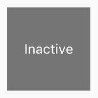

Adding Interactivity to Your Flutter App
What you’ll learn:
- How to respond to taps.
- How to create a custom widget.
- The difference between stateless and stateful widgets.
How do you modify your app to make it react to user input? In this tutorial, you’ll add interactivity to an app that contains only non-interactive widgets. Specifically, you’ll modify an icon to make it tappable by creating a custom stateful widget that manages two stateless widgets.
Contents
- Stateful and stateless widgets
- Creating a stateful widget
- Managing state
- Other interactive widgets
- Resources
Getting ready
If you’ve already build the layout in Building Layouts in Flutter, skip to the next section.
- Make sure you’ve set up your environment.
- Create a basic Flutter app.
- Replace the
lib/main.dartfile withmain.dartfrom GitHub. - Replace the
pubspec.yamlfile withpubspec.yamlfrom GitHub. - Create an
imagesdirectory in your project, and addlake.jpg.
{kind=link}
Once you have a connected and enabled device, or you’ve launched the iOS simulator (part of the Flutter install), you are good to go! </aside>
Building Layouts for Flutter showed how to create the layout for the following screenshot.
When the app first launches, the star is solid red, indicating that this lake has previously been favorited. The number next to the star indicates that 41 people have favorited this lake. After completing this tutorial, tapping the star removes its favorited status, replacing the solid star with an outline and decreasing the count. Tapping again favorites the lake, drawing a solid star and increasing the count.
To accomplish this, you’ll create a single custom widget that includes both the star and the count, which are themselves widgets. Because tapping the star changes state for both widgets, so the same widget should manage both.
You can get right to touching the code in Step 2: Subclass StatefulWidget. If you want to try different ways of managing state, skip to Managing state.
Stateful and stateless widgets
What’s the point?
- Some widgets are stateful, and some are stateless.
- If a widget changes—the user interacts with it, for example—it’s stateful.
- A widget’s state consists of values that can change, like a slider’s current value or whether a checkbox is checked.
- A widget’s state is stored in a State object, separating the widget’s state from its appearance.
- When the widget’s state changes, the state object calls
setState(), telling the framework to redraw the widget.
A stateless widget has no internal state to manage. Icon, IconButton, and Text are examples of stateless widgets, which subclass StatelessWidget.
A stateful widget is dynamic. The user can interact with a stateful widget (by typing into a form, or moving a slider, for example), or it changes over time (perhaps a data feed causes the UI to update). Checkbox, Radio, Slider, InkWell, Form, and TextField are examples of stateful widgets, which subclass StatefulWidget.
Creating a stateful widget
What’s the point?
- To create a custom stateful widget, subclass two classes: StatefulWidget and State.
- The state object contains the widget’s state and the widget’s
build()method. - When the widget’s state changes, the state object calls
setState(), telling the framework to redraw the widget.
In this section, you’ll create a custom stateful widget. You’ll replace two stateless widgets—the solid red star and the numeric count next to it—with a single custom stateful widget that manages a row with two children widgets: an IconButton and Text.
Implementing a custom stateful widget requires creating two classes:
- A subclass of StatefulWidget that defines the widget.
- A subclass of State that contains the state for that widget and defines
the widget’s
build()method.
This section shows how to build a StatefulWidget, called FavoriteWidget, for the Lakes app. The first step is choosing how FavoriteWidget’s state is managed.
Step 1: Decide which object manages the widget’s state
A widget’s state can be managed in several ways, but in our example the widget itself, FavoriteWidget, will manage its own state. In this example, toggling the star is an isolated action that doesn’t affect the parent widget or the rest of the UI, so the widget can handle its state internally.
Learn more about the separation of widget and state, and how state might be managed, in Managing state.
Step 2: Subclass StatefulWidget
The FavoriteWidget class manages its own state, so it overrides
createState() to create the State object.
The framework calls createState() when it wants to build the widget.
In this example, createState() creates an instance of _FavoriteWidgetState,
which you’ll implement in the next step.
class FavoriteWidget extends StatefulWidget {
@override
_FavoriteWidgetState createState() => new _FavoriteWidgetState();
}Step 3: Subclass State
The custom State class stores the mutable information—the logic and
internal state that can change over the lifetime of the widget.
When the app first launches, the UI displays a solid red star,
indicating that the lake has “favorite” status, and has 41 “likes”.
The state object stores this information in the
_isFavorited and _favoriteCount variables.
The state object also defines the build method. This build method
creates a row containing a red IconButton, and Text. The widget uses
IconButton,
(instead of Icon), because it has an onPressed property that
defines the callback method for handling a tap.
IconButton also has an icon property that holds the Icon.
The _toggleFavorite() method, which is called when the IconButton is pressed,
calls setState(). Calling setState() is critical, because this tells
the framework that the widget’s state has changed and the widget
should redraw. The _toggleFavorite function swaps the UI between
1) a star icon and the number ‘41’, and
2) a star_border icon and the number ‘40’.
class _FavoriteWidgetState extends State<FavoriteWidget> {
bool _isFavorited = true;
int _favoriteCount = 41;
void _toggleFavorite() {
setState(() {
// If the lake is currently favorited, unfavorite it.
if (_isFavorited) {
_favoriteCount -= 1;
_isFavorited = false;
// Otherwise, favorite it.
} else {
_favoriteCount += 1;
_isFavorited = true;
}
});
}
@override
Widget build(BuildContext context) {
return new Row(
mainAxisSize: MainAxisSize.min,
children: [
new Container(
padding: new EdgeInsets.all(0.0),
child: new IconButton(
icon: (_isFavorited
? new Icon(Icons.star)
: new Icon(Icons.star_border)),
color: Colors.red[500],
onPressed: _toggleFavorite,
),
),
new SizedBox(
width: 18.0,
child: new Container(
child: new Text('$_favoriteCount'),
),
),
],
);
}
}Step 4: Plug the stateful widget into the widget tree
Add your custom stateful widget to the widget tree in the app’s build method. First, locate the code that creates the Icon and Text, and delete it:
// ...
new Icon(
Icons.star,
color: Colors.red[500],
),
new Text('41')
// ...In the same location, create the stateful widget:
class MyApp extends StatelessWidget {
@override
Widget build(BuildContext context) {
Widget titleSection = new Container(
// ...
child: new Row(
children: [
new Expanded(
child: new Column(
// ...
),
new FavoriteWidget(),
],
),
);
return new MaterialApp(
// ...
);
}
}
That’s it! When you hot reload the app, the star icon should now respond to taps.
Problems?
If you can’t get your code to run, look in your IDE for possible errors. Debugging Flutter Apps might help. If you still can’t find the problem, check your code against the interactive Lakes example on GitHub.
lib/main.dartpubspec.yaml—no changes to this filelakes.jpg—no changes to this file
{kind=link}
If you still have questions, refer to Get support.
The rest of this page covers several ways a widget’s state can be managed, and lists other available interactive widgets.
Managing state
What’s the point?
- There are different approaches for managing state.
- You, as the widget designer, choose which approach to use.
- If in doubt, start by managing state in the parent widget.
Who manage’s the stateful widget’s state? The widget itself? The parent widget? Both? Another object? The answer is… it depends. There are several valid ways to make your widget interactive. You, as the widget designer, makes the decision based on how you expect your widget to be used. Here are the most common ways to manage state:
How do you decide which approach to use? The following principles should help you decide:
-
If the state in question is user data, for example the checked or unchecked mode of a checkbox, or the position of a slider, then the state is best managed by the parent widget.
-
If the state in question is aesthetic, for example an animation, then the state is best managed by the widget itself.
If in doubt, start by managing state in the parent widget.
We’ll give examples of the different ways of managing state by creating three
simple examples: TapboxA, TapboxB, and TapboxC.
The examples all work similarly—each creates a container that,
when tapped, toggles between a green or grey box.
The _active boolean determines the color: green for active or
grey for inactive.

These examples use GestureDetector to capture activity on the Container.
The widget manages its own state
Sometimes it makes the most sense for the widget to manage its state internally. For example, ListView automatically scrolls when its content exceeds the render box. Most developers using ListView don’t want to manage ListView’s scrolling behavior, so ListView itself manages its scroll offset.
The _TapboxAState class:
- Manages state for TapboxA.
- Defines the
_activeboolean which determines the box’s current color. - Defines the
_handleTap()function, which updates_activewhen the box is tapped and calls thesetState()function to update the UI. - Implements all interactive behavior for the widget.
// TapboxA manages its own state.
//------------------------- TapboxA ----------------------------------
class TapboxA extends StatefulWidget {
TapboxA({Key key}) : super(key: key);
@override
_TapboxAState createState() => new _TapboxAState();
}
class _TapboxAState extends State<TapboxA> {
bool _active = false;
void _handleTap() {
setState(() {
_active = !_active;
});
}
Widget build(BuildContext context) {
return new GestureDetector(
onTap: _handleTap,
child: new Container(
child: new Center(
child: new Text(
_active ? 'Active' : 'Inactive',
style: new TextStyle(fontSize: 32.0, color: Colors.white),
),
),
width: 200.0,
height: 200.0,
decoration: new BoxDecoration(
color: _active ? Colors.lightGreen[700] : Colors.grey[600],
),
),
);
}
}
//------------------------- MyApp ----------------------------------
class MyApp extends StatelessWidget {
@override
Widget build(BuildContext context) {
return new MaterialApp(
title: 'Flutter Demo',
home: new Scaffold(
appBar: new AppBar(
title: new Text('Flutter Demo'),
),
body: new Center(
child: new TapboxA(),
),
),
);
}
}Dart code:
lib/main.dart
The parent widget manages the widget’s state
Often it makes the most sense for the parent widget to manage the state and tell its child widget when to update. For example, IconButton allows you to treat an icon as a tappable button. IconButton is a stateless widget because we decided that the parent widget needs to know whether the button has been tapped, so it can take appropriate action.
In the following example, TapboxB exports its state to its parent through a callback. Because TapboxB doesn’t manage any state, it subclasses StatelessWidget.
The ParentWidgetState class:
- Manages the
_activestate for TapboxB. - Implements
_handleTapboxChanged(), the method called when the box is tapped. - When the state changes, calls
setState()to update the UI.
The TapboxB class:
- Extends StatelessWidget because all state is handled by its parent.
- When a tap is detected, it notifies the parent.
// ParentWidget manages the state for TapboxB.
//------------------------ ParentWidget --------------------------------
class ParentWidget extends StatefulWidget {
@override
_ParentWidgetState createState() => new _ParentWidgetState();
}
class _ParentWidgetState extends State<ParentWidget> {
bool _active = false;
void _handleTapboxChanged(bool newValue) {
setState(() {
_active = newValue;
});
}
@override
Widget build(BuildContext context) {
return new Container(
child: new TapboxB(
active: _active,
onChanged: _handleTapboxChanged,
),
);
}
}
//------------------------- TapboxB ----------------------------------
class TapboxB extends StatelessWidget {
TapboxB({Key key, this.active: false, @required this.onChanged})
: super(key: key);
final bool active;
final ValueChanged<bool> onChanged;
void _handleTap() {
onChanged(!active);
}
Widget build(BuildContext context) {
return new GestureDetector(
onTap: _handleTap,
child: new Container(
child: new Center(
child: new Text(
active ? 'Active' : 'Inactive',
style: new TextStyle(fontSize: 32.0, color: Colors.white),
),
),
width: 200.0,
height: 200.0,
decoration: new BoxDecoration(
color: active ? Colors.lightGreen[700] : Colors.grey[600],
),
),
);
}
}Dart code:
lib/main.dart
A mix-and-match approach
For some widgets, a mix-and-match approach makes the most sense. In this scenario, the stateful widget manages some of the state, and the parent widget manages other aspects of the state.
In the TapboxC example, on tap down, a dark green border appears around the box.
On tap up, the border disappears and the box’s color changes.
TapboxC exports its _active state to its parent but
manages its _highlight state internally.
This example has two State objects, _ParentWidgetState and _TapboxCState.
The _ParentWidgetState object:
- Manages the
_activestate. - Implements
_handleTapboxChanged(), the method called when the box is tapped. - Calls
setState()to update the UI when a tap occurs and the_activestate changes.
The _TapboxCState object:
- Manages the
_highlightstate. - The GestureDetector listens to all tap events. As the user taps down, it adds the highlight (implemented as a dark green border). As the user releases the tap, it removes the highlight.
- Calls
setState()to update the UI on tap down, tap up, or tap cancel, and the_highlightstate changes. - On a tap event, passes that state change to the parent widget to take appropriate action using the widget property.
//---------------------------- ParentWidget ----------------------------
class ParentWidget extends StatefulWidget {
@override
_ParentWidgetState createState() => new _ParentWidgetState();
}
class _ParentWidgetState extends State<ParentWidget> {
bool _active = false;
void _handleTapboxChanged(bool newValue) {
setState(() {
_active = newValue;
});
}
@override
Widget build(BuildContext context) {
return new Container(
child: new TapboxC(
active: _active,
onChanged: _handleTapboxChanged,
),
);
}
}
//----------------------------- TapboxC ------------------------------
class TapboxC extends StatefulWidget {
TapboxC({Key key, this.active: false, @required this.onChanged})
: super(key: key);
final bool active;
final ValueChanged<bool> onChanged;
_TapboxCState createState() => new _TapboxCState();
}
class _TapboxCState extends State<TapboxC> {
bool _highlight = false;
void _handleTapDown(TapDownDetails details) {
setState(() {
_highlight = true;
});
}
void _handleTapUp(TapUpDetails details) {
setState(() {
_highlight = false;
});
}
void _handleTapCancel() {
setState(() {
_highlight = false;
});
}
void _handleTap() {
widget.onChanged(!widget.active);
}
Widget build(BuildContext context) {
// This example adds a green border on tap down.
// On tap up, the square changes to the opposite state.
return new GestureDetector(
onTapDown: _handleTapDown, // Handle the tap events in the order that
onTapUp: _handleTapUp, // they occur: down, up, tap, cancel
onTap: _handleTap,
onTapCancel: _handleTapCancel,
child: new Container(
child: new Center(
child: new Text(widget.active ? 'Active' : 'Inactive',
style: new TextStyle(fontSize: 32.0, color: Colors.white)),
),
width: 200.0,
height: 200.0,
decoration: new BoxDecoration(
color:
widget.active ? Colors.lightGreen[700] : Colors.grey[600],
border: _highlight
? new Border.all(
color: Colors.teal[700],
width: 10.0,
)
: null,
),
),
);
}
}An alternate implementation might have exported the highlight state to the parent while keeping the active state internal, but if you asked someone to use that tap box, they’d probably complain that it doesn’t make much sense. The developer cares whether the box is active. The developer probably doesn’t care how the highlighting is managed, and prefers that the tap box handles those details.
Dart code:
lib/main.dart
Other interactive widgets
Flutter offers a variety of buttons and similar interactive widgets. Most of these widgets implement the Material Design guidelines, which define a set of components with an opinionated UI.
If you prefer, you can use GestureDetector to build interactivity into any custom widget. You can find examples of GestureDetector in Managing state, and in the Flutter Gallery.
When you need interactivity, it’s easiest to use one of the prefabricated widgets. Here’s a partial list:
Standard widgets:
Material Components:
- Checkbox
- DropdownButton
- FlatButton
- FloatingActionButton
- IconButton
- Radio
- RaisedButton
- Slider
- Switch
- TextField
Resources
The following resources may help when adding interactivity to your app.
- Handling gestures,
a section in A Tour of the Flutter Widget
Framework
How to create a button and make it respond to input. - Gestures in Flutter
A description of Flutter’s gesture mechanism. - Flutter API documentation
Reference documentation for all of the Flutter libraries. - Flutter
Gallery
Demo app showcasing many Material Components and other Flutter features. - Flutter’s Layered
Design (video)
This video includes information about state and stateless widgets. Presented by Google engineer, Ian Hickson.